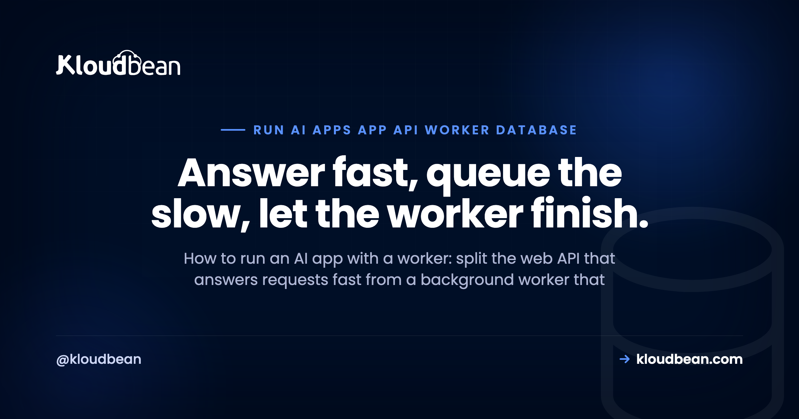
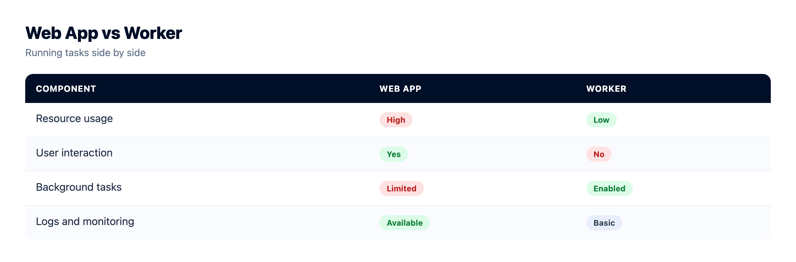
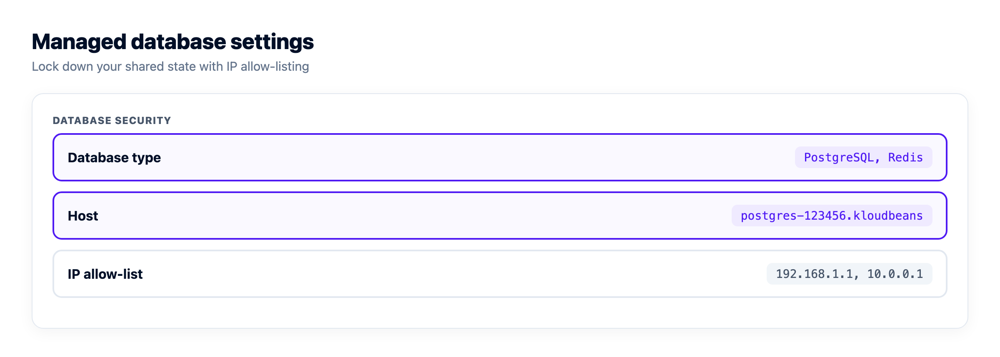
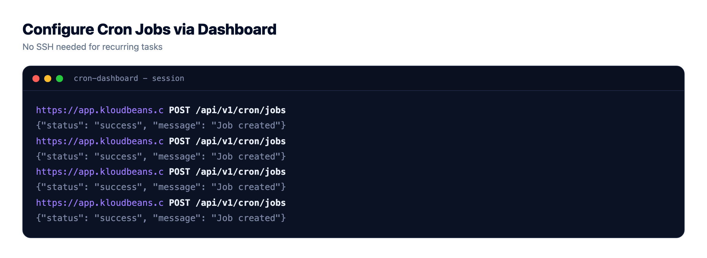

How to Run an AI App with an API, a Worker, and a Database

You shipped an AI app and it worked fine, right up until it had to do something slow. A long model generation. Indexing a pile of documents for retrieval. A nightly batch export. Send that work through the web request and the request just hangs, then times out. So you split the app: a web API that answers requests fast, and a background worker that does the heavy lifting behind it. Get the API, worker, and database talking through a queue and the whole thing stays responsive under load.
That's the shape almost every AI app grows into. It isn't microservices and it isn't complicated. It's four pieces (an API, a worker, a queue, and a database) plus a few rules about who does what. This page walks how to run an AI app with a worker alongside the API, how they share state without ever calling each other, and how you run two processes out of one codebase.
An AI app that does slow work splits into two processes. A web API takes the request, validates it, drops a job on a queue, and returns right away. A separate always-on worker pulls jobs off the queue, does the slow part, and writes the result to a shared database. The API and the worker never call each other. They meet at the queue and the database. Same codebase, two start commands.
Why an AI app grows a worker
A web server has one job during a request: answer it, quickly. The user is waiting, a load balancer is timing the response, and browsers and proxies give up after some number of seconds. That contract is fine for normal work. Read a row, render a page, save a form. It breaks the moment your app has to do something that takes real time.
AI apps are full of that something. A single model generation can run for many seconds. Indexing documents into embeddings can take minutes. A batch job over thousands of rows, a big PDF to parse, an email to push through a flaky provider: none of it fits inside the few seconds a request is allowed to live.
So you stop doing it inline. The API takes the request, writes down what needs to happen, and hands it off. Something else does the slow part. That something else is the worker, and the day you add one, you have a multi-service app whether you call it that or not. AI builders scaffold the happy path and quietly skip this bit, which is a big chunk of the last mile of vibe coding.
How the API, worker, and database fit together
Four pieces, and each has exactly one job.
| Piece | What it does | Who it talks to |
|---|---|---|
| The API (web process) | Accepts requests, validates them, creates jobs, returns fast, reads results back for the client | The queue and the database |
| The worker | Runs always-on, pulls jobs off the queue, does the slow work, writes the result | The queue and the database |
| The queue | Holds the jobs the API created until a worker is free to run them (usually Redis-backed) | Written by the API, read by the worker |
| The database | The shared system of record: job status, results, and your app's real data | Read and written by both |
The thing to notice: the API and the worker don't talk to each other. No HTTP call from one to the other, no shared memory. They meet at the queue and the database. The API writes a job, the worker reads it. The worker writes a result, the API reads it back. That indirection is the whole point. It means either side can restart, redeploy, or scale without the other even noticing.
This is one slice of a larger picture. If you want the full map (edge, auth, storage, observability, and where this middle sits), the AI app reference architecture draws the whole thing. This page zooms into the API, worker, and database at the centre of it.

What one request actually does
Follow a single request through the shape. Say a user asks your app to summarise a long document.
- The request hits the API. It checks who's asking and that the input is valid.
- The API creates a job. It writes a job row (status: queued) and pushes the job onto the queue.
- The API returns immediately, with a job id. The user isn't left hanging. Total time: milliseconds.
- The worker picks up the job. It's always running, watching the queue. It pulls the next job and marks it running.
- The worker does the slow thing. The long model call, the indexing, whatever it is. This can take as long as it needs.
- The worker writes the result to the database and marks the job done.
- The client gets the result. It either polls the API (any update on job 42?) or receives a pushed notification. The API reads the finished result out of the database and hands it back.
The user waited milliseconds for step 3 and got their answer whenever the work actually finished. The request path never blocked. That's the entire win.
What stays in the request, what moves to the worker
How do you decide what runs inline and what goes to the worker? Rough rule: if it's fast and the user needs the answer to keep going, do it in the request. If it's slow, or the user doesn't need to sit and watch it happen, hand it to the worker.
| Do it in the request | Move it to the worker |
|---|---|
| Validate and authorise the input | Run a long model generation |
| Read or write a row the response needs | Index documents into embeddings for retrieval |
| Create the job and return its id | Send email, call third-party APIs |
| Fast, simple CRUD | Batch jobs, exports, report generation |
| Serve a cached result | Anything that can safely retry later |
Here's the anti-pattern that lands people in this article in the first place: doing the slow work inside the HTTP request. It looks fine locally, where you're the only user and the model answers in two seconds. Under real traffic it falls over. The request holds a connection open for 30 or 40 seconds, a proxy or load balancer kills it with a 504, and while it waits it ties up a worker thread that can't serve anyone else. One slow route can drag the whole app down with it. The dedicated fix for that long-task case is in how to run a long AI task without hitting a timeout. That failure mode, and the others in its family, are exactly why AI apps fail in production.
How the API and the worker share state
Since the two processes never call each other, all their coordination runs through two shared things: the queue and the database.
The queue is the to-do list. The API adds items, the worker takes them off. Because it's durable (Redis, with BullMQ doing the work in the Node world), a job doesn't vanish if the worker is briefly down. It waits. When a worker comes back, it keeps draining. Retries, backoff, concurrency, and scheduled jobs all live at this layer. Redis is what makes the queue both durable and fast, which is why you want a real managed Redis hosting instance backing it rather than an in-memory stand-in that forgets everything on restart. On Kloudbean that Redis is one click in the same account as the app, with the app server's IP allow-listed on it, so the queue never becomes a separate vendor with its own dashboard, bill, and network path to debug.
The database is the source of truth. Job status, the finished result, and your app's normal data all live there, and both processes read and write it. Use one shared database for both so they genuinely see the same state. Two copies drift, and then you're debugging ghosts. Postgres is the usual default, and managed PostgreSQL hosting covers running it as that shared record.
Because they share models and config, keep the API and the worker in one codebase. Same repo, same types, same database client. You just start them as two different processes.
Two processes, one codebase
This is the part people overthink. You don't need two repos, two services, or a service mesh. You need one codebase and two entry points: one that starts the web server, one that starts the worker.
The API validates the request and enqueues a job:
// api.js (the web process)
import express from "express";
import { Queue } from "bullmq";
const app = express();
const jobs = new Queue("generate", {
connection: { host: process.env.REDIS_HOST, port: 6379 },
});
app.post("/summarize", async (req, res) => {
// fast validation here, then hand off the slow work
const job = await jobs.add("summarize", { docId: req.body.docId });
res.status(202).json({ jobId: job.id }); // return right away
});
app.listen(3000);The worker is a separate process that drains the queue:
// worker.js (a separate always-on process)
import { Worker } from "bullmq";
import { runModel } from "./model.js";
import { db } from "./db.js";
new Worker(
"generate",
async (job) => {
const result = await runModel(job.data.docId); // the slow part
await db.saveResult(job.data.docId, result); // write to the shared DB
},
{ connection: { host: process.env.REDIS_HOST, port: 6379 }, concurrency: 5 }
);And you run both from the same build, as two commands:
{
"scripts": {
"start": "node api.js",
"worker": "node worker.js"
}
}My honest opinion: don't reach for microservices here. One repo with a web process and a worker process covers almost every AI app you'll build, and it's far easier to run than a fleet of tiny services with their own deploys, their own configs, and network hops between them. Split into more services when a real boundary forces you to, not because a diagram looked tidy. Two processes will carry you a very long way.
Two start commands means your host has to be comfortable running two long-lived Node processes on one server. Kloudbean runs Node under PM2 with multi-process support, so the worker sits beside the web process on the same always-on machine instead of needing a second paid service to exist.
You add scheduled work the same way: a cron entry (or a small third process) that enqueues jobs on a timer, like a nightly cleanup or a daily digest email. Cron entries are configurable from the Kloudbean dashboard without SSH, which matters more than it sounds when the person who needs to add a nightly job isn't the person with server access. Same codebase, same queue, same database.
Scaling the API and the worker, honestly
Splitting the app buys you something concrete. You scale the two halves on their own. If requests pile up, run more web instances. If the queue backs up because jobs arrive faster than one worker can finish them, run more workers. They're different processes, so you size them separately instead of over-provisioning one big box to cover both.
Be clear-eyed about what "scale" means, though. On a normal plan you do this by provisioning more processes yourself. You start another worker. You add another web instance. That's a deliberate step, not magic. Automatic autoscaling and Kubernetes are enterprise or custom territory, not something a standard app does on its own, so don't design as if the platform will conjure workers for you when the queue grows. Design so adding one is a quick job when you decide to. In practice the first answer to a backed-up queue is usually a bigger box or one more worker concurrency setting, and vertical resize up is self-serve on Kloudbean. Just note that disks resize up only, never down, so be deliberate about storage.
The other anti-pattern, the sneaky one: running the "worker" as a setInterval or a fire-and-forget promise inside the web process. It feels simpler. It isn't. That timer dies the instant you deploy, because a fresh process replaces the old one mid-job, and if you run two web instances then both timers fire and you do the work twice. A real worker is its own process precisely so it survives deploys and so you control exactly how many are running. A worker also has to stay awake between jobs, which is why serverless doesn't fit it well. Moving an AI app off serverless walks through why an always-on process is the requirement for this shape.
Who operates each of the four pieces
Four pieces means four things that can page you. Before you build this shape, be clear about which of them you're signing up to operate yourself, because that decision is the actual cost of the architecture. Here's the split on a managed platform, and what stays yours no matter who you host with.
| Piece | Operated by the platform | Yours to get right | Nobody fixes this for you |
|---|---|---|---|
| API (web process) | The always-on server, the runtime, SSL, patching, Git deploys | Route handlers, validation, returning fast instead of blocking | A route that does the slow work inline still times out on any host |
| Worker | A second long-lived process on the same server, kept awake, restarted under PM2 | Concurrency, retries, idempotency, how many you run | A job that isn't idempotent will double-charge someone when it retries |
| Queue | Managed Redis, provisioned in a click, backed up, IP allow-listed | Queue naming, backoff, dead-letter handling, what counts as a poison job | Unbounded job creation drowns any queue, managed or not |
| Database | One of seven managed engines, automatic and on-demand backups, access locked to your app server's IP | Schema, indexes, connection pooling, what a job row means | A missing index on the job-status lookup is yours alone |
Read the right-hand column twice. That's the honest part. No host fixes a non-idempotent job, ours included. Kloudbean can keep the worker alive through a redeploy and hand you a Redis that doesn't forget, and it cannot stop a retry from sending the same email twice if you didn't make the handler safe to run again. Same for an unbounded fan-out that enqueues a million jobs from one webhook. That's a design decision, and it costs the same on every platform.
What a single dashboard changes is the number of boundaries. The always-on server for Node or Python, the managed Redis behind the queue, and the managed PostgreSQL holding job status and results all sit in one account, deploying from Git with free SSL, from $8/mo. Four vendors would mean four sets of credentials, four network paths, and four status pages to check at 3am. For a written-up version of this exact shape, how we host our own AI content engine covers the always-on Node process, its PostgreSQL, and the env vars behind it.
Scope boundary, plainly: running more workers or more web instances is a step you take. A standard plan doesn't autoscale, and Kubernetes, autoscaling, and private networking are Enterprise capabilities rather than switches on an $8 server. Design so adding a process is a five-minute job, not something you wait for the platform to do.

Managed, backed up, and still yours.
Launch MySQL, MariaDB, PostgreSQL, Redis, Memcached, MongoDB, or Elasticsearch in a click, reachable from your app server with automatic backups from minute one. Standard connection strings, standard dumps, no proprietary format.
- ✓ Seven managed engines
- ✓ One-click launch
- ✓ Automatic backups
- ✓ Controlled access
- ✓ Standard connection strings
- ✓ Free migration assistance
Plans from $8/mo · Free migration assistance · Free trial

FAQ
Do I need a separate worker process?
If your app does anything slow (a long model call, indexing, batch jobs, sending email), yes. Doing that work inside the web request blocks it and risks a timeout under load. If everything your app does is genuinely fast and finishes in well under a second, you can skip the worker until you actually need one.
How do the API and the worker communicate?
They don't call each other directly. The API writes a job to a queue and writes rows to a shared database. The worker reads jobs off the queue and writes results back to the same database. That indirection is what lets either side deploy, restart, or scale without breaking the other.
Can I run a worker and web server in the same app?
You keep them in one codebase, but run them as two separate processes with two start commands. Running the worker as a timer inside the web process is a common mistake: it dies on the next deploy and duplicates work when you run more than one web instance. Same code, separate processes.
What backs the job queue?
Usually Redis. In Node, BullMQ is the common library and it stores its queues in Redis, which keeps jobs durable and fast. You want a real managed Redis for this, not an in-memory stand-in, so jobs survive a worker restart. Python has equivalents like Celery or RQ that also lean on Redis or a message broker.
What is the difference between a web process and a worker process?
The web process handles HTTP requests and has to answer quickly. The worker process has no HTTP endpoint at all. It just watches the queue and runs jobs, taking as long as each one needs. Same codebase, different entry point, and you scale them independently.
How does the client get the result of a background job?
Two common ways. The client polls the API (asking whether job 42 is done yet) until the status flips to done, then reads the result. Or the server pushes a notification over WebSockets or Server-Sent Events when the job finishes. Either way, the finished result lives in the database and the API hands it back.
Can I run more than one worker?
Yes, and that's the point of the split. If the queue backs up, run additional worker processes to drain it faster. If requests pile up, run more web instances. You scale the two independently. On a standard plan you provision those extra processes yourself rather than relying on automatic autoscaling.
Do the API and worker need to share one codebase?
It's the easiest way, because they share models, types, and config. One repo, one build, two start commands. You can split them into separate services later if a real boundary demands it, but most AI apps never need to, and the extra moving parts rarely pay for themselves early.
Do I need Kubernetes to run a background worker?
No. A worker is just a second long-running process next to your web app. You can run it on a normal always-on server with a couple of start commands. Kubernetes and autoscaling are for larger or enterprise setups. Almost every AI app runs fine with one web process and one worker.